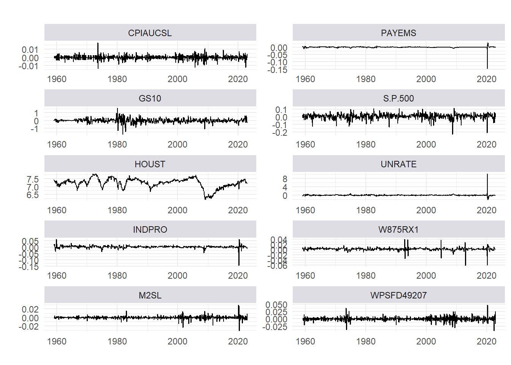

3 1) Transformation
The column tcode denotes the following data transformation for a series \(x\): (1) no transformation; (2) \(\Delta x_t\); (3) \(\Delta^2 x_T\); (4) \(\log(x_t)\); (5) \(\Delta\log(x_t)\); (6) \(\Delta^2\log(x_t)\) (7) \(\Delta(x_t / x_{t-1} -1)\).
The FRED column gives mnemonics in FRED followed by a short description. The comparable series in Global Insight is given in the column GSI.
d_stationary <- transform_fred(d, tcode = tcodes)
#> Column 2, RPI. Transformation 5 (logDiff)
#> Column 3, W875RX1. Transformation 5 (logDiff)
#> Column 4, DPCERA3M086SBEA. Transformation 5 (logDiff)
#> Column 5, CMRMTSPLx. Transformation 5 (logDiff)
#> Column 6, RETAILx. Transformation 5 (logDiff)
#> Column 7, INDPRO. Transformation 5 (logDiff)
#> Column 8, IPFPNSS. Transformation 5 (logDiff)
#> Column 9, IPFINAL. Transformation 5 (logDiff)
#> Column 10, IPCONGD. Transformation 5 (logDiff)
#> Column 11, IPDCONGD. Transformation 5 (logDiff)
#> Column 12, IPNCONGD. Transformation 5 (logDiff)
#> Column 13, IPBUSEQ. Transformation 5 (logDiff)
#> Column 14, IPMAT. Transformation 5 (logDiff)
#> Column 15, IPDMAT. Transformation 5 (logDiff)
#> Column 16, IPNMAT. Transformation 5 (logDiff)
#> Column 17, IPMANSICS. Transformation 5 (logDiff)
#> Column 18, IPB51222S. Transformation 5 (logDiff)
#> Column 19, IPFUELS. Transformation 5 (logDiff)
#> Column 20, CUMFNS. Transformation 2 (Diff)
#> Column 21, HWI. Transformation 2 (Diff)
#> Column 22, HWIURATIO. Transformation 2 (Diff)
#> Column 23, CLF16OV. Transformation 5 (logDiff)
#> Column 24, CE16OV. Transformation 5 (logDiff)
#> Column 25, UNRATE. Transformation 2 (Diff)
#> Column 26, UEMPMEAN. Transformation 2 (Diff)
#> Column 27, UEMPLT5. Transformation 5 (logDiff)
#> Column 28, UEMP5TO14. Transformation 5 (logDiff)
#> Column 29, UEMP15OV. Transformation 5 (logDiff)
#> Column 30, UEMP15T26. Transformation 5 (logDiff)
#> Column 31, UEMP27OV. Transformation 5 (logDiff)
#> Column 32, CLAIMSx. Transformation 5 (logDiff)
#> Column 33, PAYEMS. Transformation 5 (logDiff)
#> Column 34, USGOOD. Transformation 5 (logDiff)
#> Column 35, CES1021000001. Transformation 5 (logDiff)
#> Column 36, USCONS. Transformation 5 (logDiff)
#> Column 37, MANEMP. Transformation 5 (logDiff)
#> Column 38, DMANEMP. Transformation 5 (logDiff)
#> Column 39, NDMANEMP. Transformation 5 (logDiff)
#> Column 40, SRVPRD. Transformation 5 (logDiff)
#> Column 41, USTPU. Transformation 5 (logDiff)
#> Column 42, USWTRADE. Transformation 5 (logDiff)
#> Column 43, USTRADE. Transformation 5 (logDiff)
#> Column 44, USFIRE. Transformation 5 (logDiff)
#> Column 45, USGOVT. Transformation 5 (logDiff)
#> Column 46, CES0600000007. Transformation 1 (Identity)
#> Column 47, AWOTMAN. Transformation 2 (Diff)
#> Column 48, AWHMAN. Transformation 1 (Identity)
#> Column 49, HOUST. Transformation 4 (log)
#> Column 50, HOUSTNE. Transformation 4 (log)
#> Column 51, HOUSTMW. Transformation 4 (log)
#> Column 52, HOUSTS. Transformation 4 (log)
#> Column 53, HOUSTW. Transformation 4 (log)
#> Column 54, PERMIT. Transformation 4 (log)
#> Column 55, PERMITNE. Transformation 4 (log)
#> Column 56, PERMITMW. Transformation 4 (log)
#> Column 57, PERMITS. Transformation 4 (log)
#> Column 58, PERMITW. Transformation 4 (log)
#> Column 59, ACOGNO. Transformation 5 (logDiff)
#> Column 60, AMDMNOx. Transformation 5 (logDiff)
#> Column 61, ANDENOx. Transformation 5 (logDiff)
#> Column 62, AMDMUOx. Transformation 5 (logDiff)
#> Column 63, BUSINVx. Transformation 5 (logDiff)
#> Column 64, ISRATIOx. Transformation 2 (Diff)
#> Column 65, M1SL. Transformation 6 (logDiff2)
#> Column 66, M2SL. Transformation 6 (logDiff2)
#> Column 67, M2REAL. Transformation 5 (logDiff)
#> Column 68, BOGMBASE. Transformation 6 (logDiff2)
#> Column 69, TOTRESNS. Transformation 6 (logDiff2)
#> Column 70, NONBORRES. Transformation 7 (diffp)
#> Column 71, BUSLOANS. Transformation 6 (logDiff2)
#> Column 72, REALLN. Transformation 6 (logDiff2)
#> Column 73, NONREVSL. Transformation 6 (logDiff2)
#> Column 74, CONSPI. Transformation 2 (Diff)
#> Column 75, S.P.500. Transformation 5 (logDiff)
#> Column 76, S.P..indust. Transformation 5 (logDiff)
#> Column 77, S.P.div.yield. Transformation 2 (Diff)
#> Column 78, S.P.PE.ratio. Transformation 5 (logDiff)
#> Column 79, FEDFUNDS. Transformation 2 (Diff)
#> Column 80, CP3Mx. Transformation 2 (Diff)
#> Column 81, TB3MS. Transformation 2 (Diff)
#> Column 82, TB6MS. Transformation 2 (Diff)
#> Column 83, GS1. Transformation 2 (Diff)
#> Column 84, GS5. Transformation 2 (Diff)
#> Column 85, GS10. Transformation 2 (Diff)
#> Column 86, AAA. Transformation 2 (Diff)
#> Column 87, BAA. Transformation 2 (Diff)
#> Column 88, COMPAPFFx. Transformation 1 (Identity)
#> Column 89, TB3SMFFM. Transformation 1 (Identity)
#> Column 90, TB6SMFFM. Transformation 1 (Identity)
#> Column 91, T1YFFM. Transformation 1 (Identity)
#> Column 92, T5YFFM. Transformation 1 (Identity)
#> Column 93, T10YFFM. Transformation 1 (Identity)
#> Column 94, AAAFFM. Transformation 1 (Identity)
#> Column 95, BAAFFM. Transformation 1 (Identity)
#> Column 96, TWEXAFEGSMTHx. Transformation 5 (logDiff)
#> Column 97, EXSZUSx. Transformation 5 (logDiff)
#> Column 98, EXJPUSx. Transformation 5 (logDiff)
#> Column 99, EXUSUKx. Transformation 5 (logDiff)
#> Column 100, EXCAUSx. Transformation 5 (logDiff)
#> Column 101, WPSFD49207. Transformation 6 (logDiff2)
#> Column 102, WPSFD49502. Transformation 6 (logDiff2)
#> Column 103, WPSID61. Transformation 6 (logDiff2)
#> Column 104, WPSID62. Transformation 6 (logDiff2)
#> Column 105, OILPRICEx. Transformation 6 (logDiff2)
#> Column 106, PPICMM. Transformation 6 (logDiff2)
#> Column 107, CPIAUCSL. Transformation 6 (logDiff2)
#> Column 108, CPIAPPSL. Transformation 6 (logDiff2)
#> Column 109, CPITRNSL. Transformation 6 (logDiff2)
#> Column 110, CPIMEDSL. Transformation 6 (logDiff2)
#> Column 111, CUSR0000SAC. Transformation 6 (logDiff2)
#> Column 112, CUSR0000SAD. Transformation 6 (logDiff2)
#> Column 113, CUSR0000SAS. Transformation 6 (logDiff2)
#> Column 114, CPIULFSL. Transformation 6 (logDiff2)
#> Column 115, CUSR0000SA0L2. Transformation 6 (logDiff2)
#> Column 116, CUSR0000SA0L5. Transformation 6 (logDiff2)
#> Column 117, PCEPI. Transformation 6 (logDiff2)
#> Column 118, DDURRG3M086SBEA. Transformation 6 (logDiff2)
#> Column 119, DNDGRG3M086SBEA. Transformation 6 (logDiff2)
#> Column 120, DSERRG3M086SBEA. Transformation 6 (logDiff2)
#> Column 121, CES0600000008. Transformation 6 (logDiff2)
#> Column 122, CES2000000008. Transformation 6 (logDiff2)
#> Column 123, CES3000000008. Transformation 6 (logDiff2)
#> Column 124, UMCSENTx. Transformation 2 (Diff)
#> Column 125, DTCOLNVHFNM. Transformation 6 (logDiff2)
#> Column 126, DTCTHFNM. Transformation 6 (logDiff2)
#> Column 127, INVEST. Transformation 6 (logDiff2)
#> Column 128, VIXCLSx. Transformation 1 (Identity)
plot_ts(d_stationary[,target_variables], date = d_stationary[,1], n_row = 5)
#> Warning: Removed 3 row(s) containing missing values
#> (geom_path).
cat("\n", sum(is.na(d_stationary)) - sum(is.na(d)), "missing values have been introduced")
#>
#> 215 missing values have been introduced
count_missing(d_stationary[-c(1, nrow(d_stationary)),])